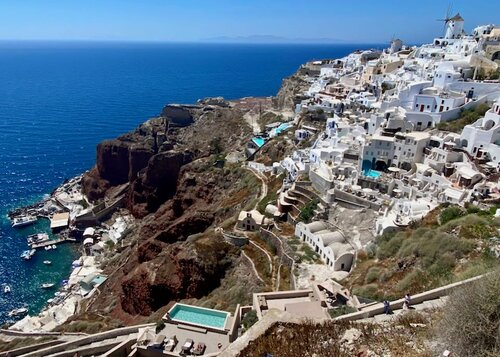

Tendani Mamadi

City I would like to visit - Santorini

I have a Building and Civil engineering background. I'm interested in knowing how the Greek managed to build houses that cling on a rock. It will give me more insights on engineering methods implemented. Not forgetting the ambience, beautiful view of the ocean and islands surrounding the city.
Foreign Language - Spanish
I would like to learn Spanish, because it is one of the most common language used in countries that i want to visit, like , Columbia, America, Barcelona, Madrid and Ibiza.
| English | Spanish |
|---|---|
| How are you? | ¿Cómo estás? |
| What is your name? | ¿Cómo te llamas? |
| Where are you from? | ¿De dónde viene? |
Historical Places
City Hall
- Cape Town City Hall was built in 1905.
- It is located on the Grand Parade to the west of the Castle.
- Nelson Mandela made his first speech there, upon release from prison.

Bo-Kaap
- Formerly known as the Malay Quarter.
- It is a former racially segregated area.
- The Nurul Islam Mosque, established in 1844, is located in the area.

District_Six
- Established in 1989.
- Serves as a remembrance of the once lively multi-racial area,forcefully removed during apartheid in the 1960s and 1970s.